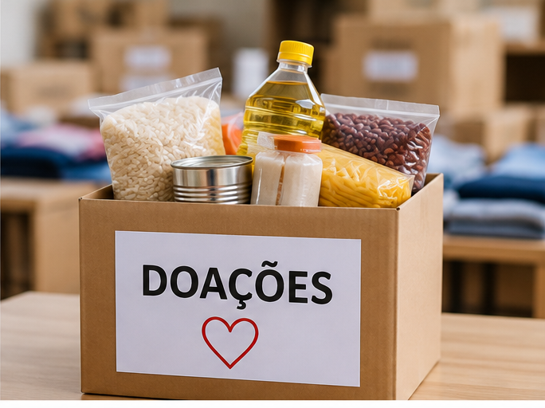
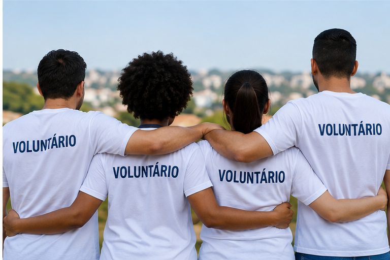

Projetos de Doação
Nossos projetos de doação arrecadam alimentos, roupas e outros recursos destinados às pessoas e comunidades atendidas pela organização.

Voluntariado
Pessoas interessadas podem participar de nossas ações voluntárias e contribuir diretamente com os projetos sociais.

Campanhas de Arrecadação
As campanhas de arrecadação são realizadas para reunir recursos e materiais necessários para atender às demandas dos projetos da organização.
Como Contribuir
Você pode contribuir realizando uma doação financeira, doando materiais ou participando como voluntário.
Para participar de nossas ações, acesse a página de cadastro e informe seus dados.